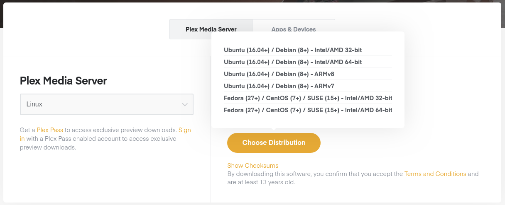
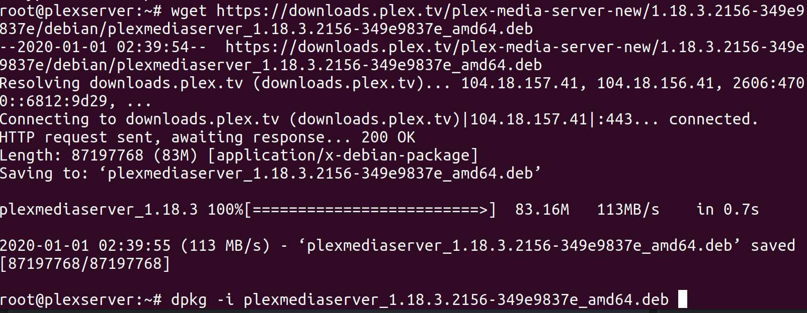
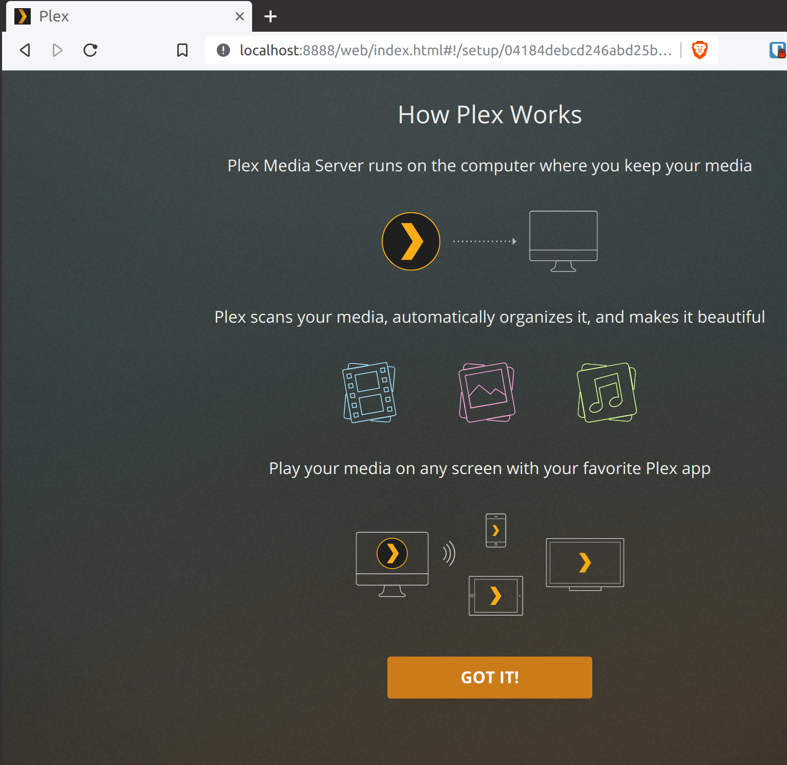

With the rise of multiple streaming services with varied content, there seems to be a push back to having your own personal collection of movies and shows. A person could go down the road of buying a small form factor motherboard, CPU, Hard Drives and install Linux, deal with local network issues to get the content available outside the house; not including upkeep on the physical as well as the software. Plex has a online server you can install and use to stream your own personal content online, ad free. A notice: THIS GUIDE DOES NOT CONDONE ILLEGAL USE! Please remember the legality and ethics of piracy, do what you will with this information, but I am not responsible.
Using a Digital Ocean Ubuntu 18.04 image with 2 GB of RAM and 2 CPUs ($15/month), you can install the Plex Media Server on this system from this link. Please select Linux in the "Plex Media Server" left hand side and "Ubuntu (16.04+) / Debian (8+) - Intel/AMD 64-bit" option. 
In order to skip a step of downloading and uploading to the Digital Ocean VM, right click the proper option and choose "Copy Link Address." Once logged into your DO VM, type "wget" add a space and paste the link from the Plex website and hit enter. This will download the file to the DO VM directly.
Two more steps will be required to finalize installation. Per this article, you will need to run the following two commands to ensure updates will occur for the Plex software (because we are all about security here!)
With the Plex program installed, we need to configure it. Per this page, we will create an SSH tunnel to configure our server. On the terminal, go type:
On a browser, naviate to localhost:8888/web and you should see your Plex server. If you haven't made a Plex account yet, you can at this step and then proceed. You will need it to stream from your phone and other places.
We MUST have "Allow me to access my media outside my home" as this device isn't in our homes!
At this time, you can start uploading content to the VM and then have it scan for it and add it to your library. The easiest way is by the command scp. As seen here:
With data uploaded on the Plex Server, you can now go to your cell phone or other device, download the Plex App, login and begin streaming ad free to your heart's content.
If you wish to secure your server with HTTPS, you can use this guide to accomplish this. You will need a domain name before proceeding; if you don't have one, you can buy one at domains.google.
I do want to note that the only purchase I made was on my Android device in order to stream from it to my other devices ($4.99). I did not pay for Plex Pass or anything else Plex related.